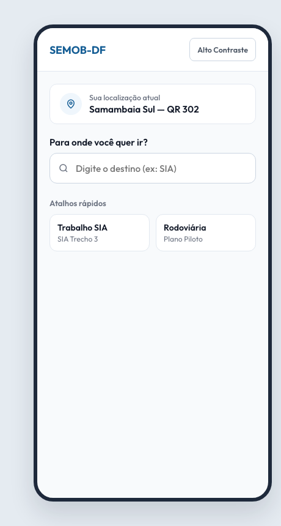
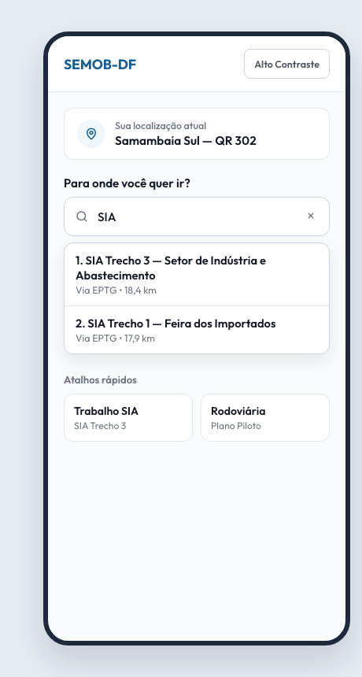
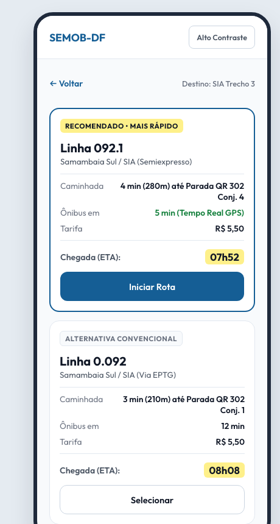
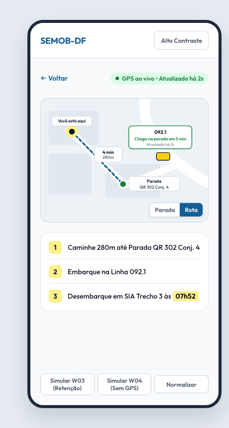
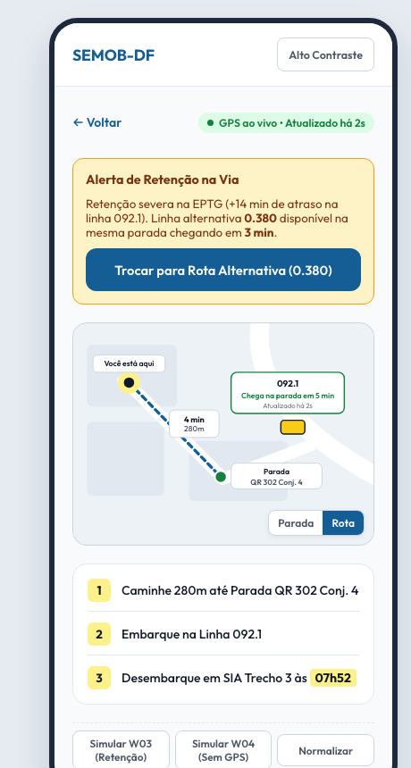
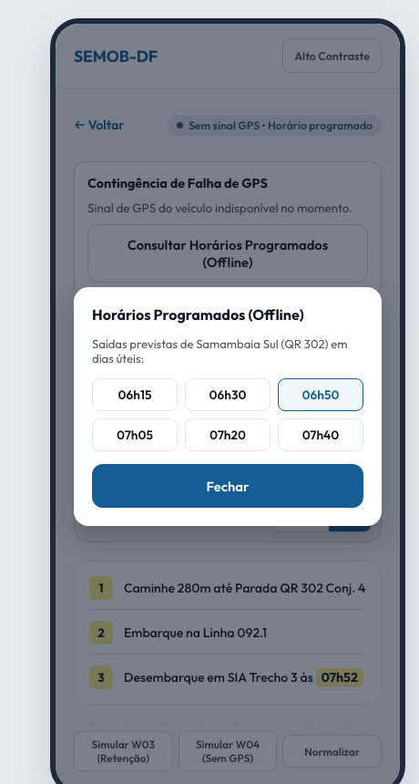
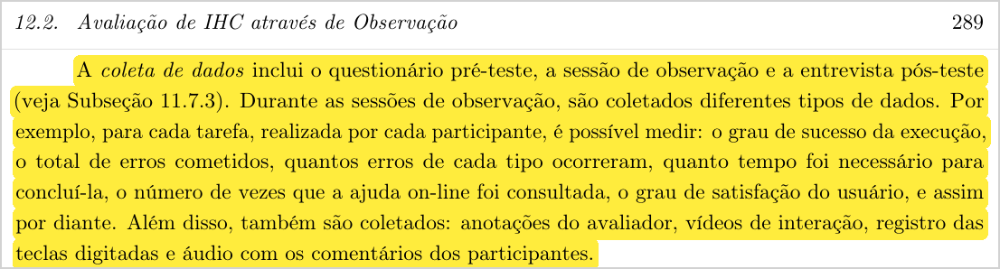
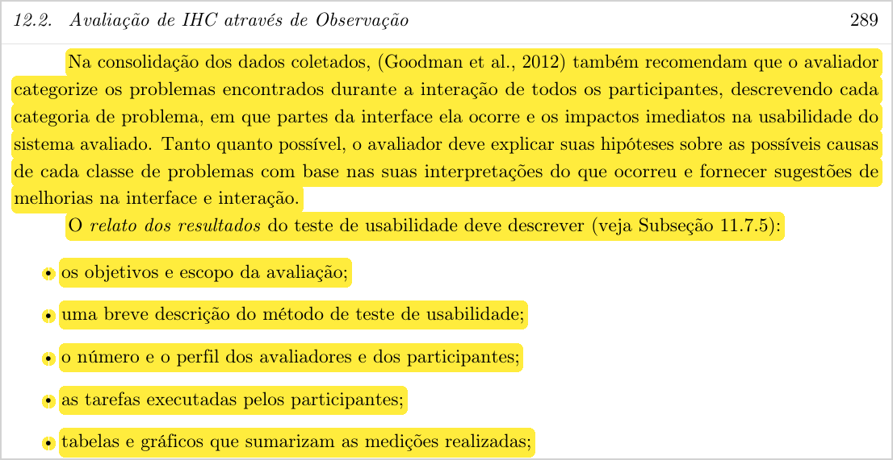
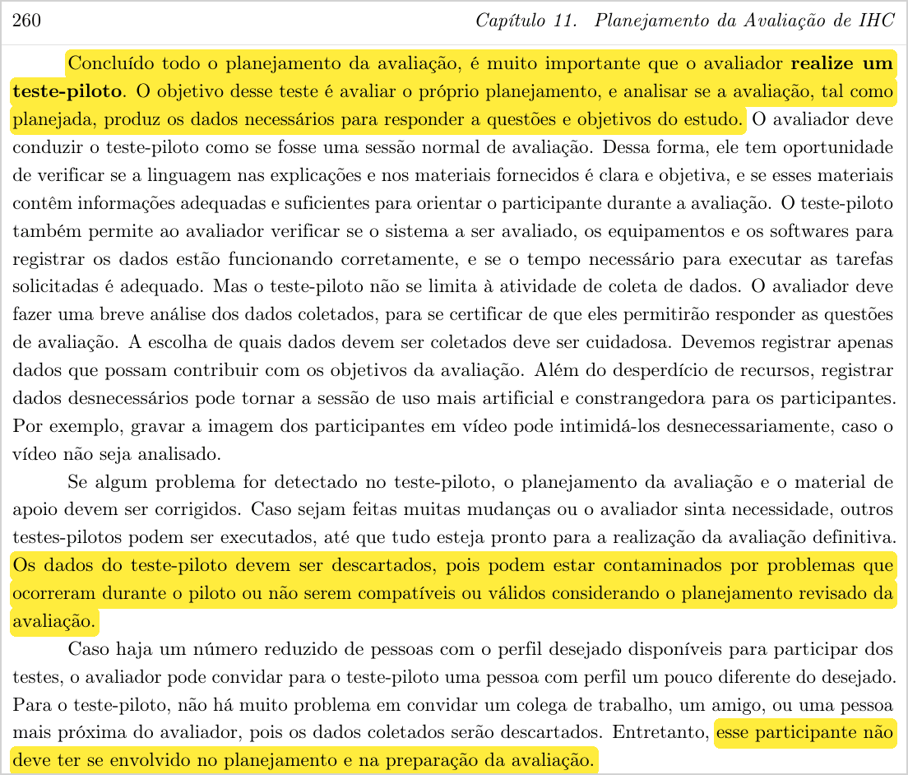

Histórico de Versão e Contribuição¶
| Data | Versão | Descrição | Autor(es) | Revisor(es) | Declaração de Uso de IA |
|---|---|---|---|---|---|
| 11/11/2026 | 0.1 |
Estruturação inicial do relato dos resultados da avaliação do Protótipo de Alta Fidelidade em HTML navegável (TAR-03), incluindo identificação técnica do protótipo, galeria de telas, tabelas de consolidação e referências grifadas. | Lucas Araújo Lima | Arthur Mariani | Google Gemini: utilizado apenas para formatação em Markdown |
| 12/11/2026 | 1.0 |
Consolidação final dos resultados com dados empíricos das 3 sessões de teste de usabilidade, métricas quantitativas, matriz DECIDE, priorização de problemas e plano de reprojeto. | Lucas Araújo Lima | Arthur Mariani | Google Gemini: utilizado apenas para formatação em Markdown |
Relato dos Resultados da Avaliação do Protótipo de Alta Fidelidade (TAR-03)¶
Relato Concluído com Dados Empíricos
Este documento consolida os resultados empíricos reais obtidos nas 3 sessões de teste de usabilidade conduzidas com participantes representativos do público-alvo (alinhados ao perfil da persona primária Marcos Paulo Vieira ("Marquinhos")), acompanhados de registros audiovisuais na íntegra, métricas quantitativas de desempenho e análise qualitativa segundo o framework DECIDE.
Neste documento, apresenta-se o Relato dos Resultados da Avaliação do Protótipo de Alta Fidelidade referente à TAR-03: Planejamento de Rota Completa (Porta a Porta) por Destino com Indicação de Paradas e Previsão de Chegada. A condução da avaliação obedece ao protocolo estabelecido no Planejamento da Avaliação do Protótipo de Alta Fidelidade (TAR-03) e segue rigorosamente a estrutura definida no Planejamento do Relato dos Resultados (TAR-03).
Em conformidade com as diretrizes de Barbosa et al. (2021, Seção 11.7.5, Seção 12.2.1, pp. 262–290), os dados coletados foram inicialmente analisados por participante e por sub-tarefa, e em seguida consolidados para responder às seis questões investigativas (QF01 a QF06) do framework DECIDE (Figura 7), catalogando os problemas de usabilidade encontrados segundo a escala de Nielsen (Figuras 8 e 9).
Artefatos relacionados — fluxo da funcionalidade TAR-03 (Planejamento de Rota por Origem e Destino):
- Persona: Marcos Paulo Vieira
- Cenário: Cenário 3
- Análise de tarefas: TAR-03
- Storyboard: Storyboard 03
- Nível 1: avaliação do storyboard e da análise de tarefas: Planejamento da avaliação (não realizado) · Planejamento do relato (não realizado) · Relato dos resultados · Planejamento individual de tarefas · Questões práticas e éticas
- Nível 2: protótipo de papel (baixa fidelidade): Planejamento da avaliação · Planejamento do relato · Relato dos resultados
- Nível 3: protótipo de alta fidelidade: Planejamento da avaliação · Planejamento do relato · Relato dos resultados (esta página)
- Telas do protótipo de papel: telas no planejamento da avaliação
- Protótipo de alta fidelidade navegável: acessar o protótipo
1. Objetivos e Escopo da Avaliação¶
O escopo desta avaliação no Nível 3 compreendeu o fluxo completo de planejamento de viagem porta a porta no sistema SEMOB-DF / DF no Ponto, partindo da localização atual automática via GPS (Samambaia Sul — QR 302) até o destino profissional (SIA Trecho 3), no contexto da persona primária Marcos Paulo Vieira ("Marquinhos").
Os objetivos específicos da avaliação foram:
- Aferir a eficiência e a eficácia na execução das sub-tarefas (
TAR-03.1,TAR-03.2eTAR-03.3): Medir a taxa de conclusão sem auxílio, a contagem de cliques incorretos (misclicks) e o tempo despendido pelos 3 participantes, comparando o desempenho empírico à predição analítica de9,70 sobtida via GOMS/KLM na análise de tarefas. - Validar as correções oriundas do Protótipo de Papel: Verificar se a ampliação dos rótulos de caminhada até a parada (Parada QR 302 Conj. 4) e a hierarquia dos cartões de rota eliminaram hesitações quando renderizadas com tipografia, cores e interação reais no navegador web móvel.
- Avaliar a compreensibilidade dos estados de contingência em tempo real: Testar a reação dos usuários diante do componente de retenção severa na EPTG (
+14 min, com troca em 1 toque para a linha0.380) e do estado simulado de perda de sinal GPS (mudança cromática para cinza e consulta à grade horária offline). - Verificar a aderência ao Guia de Estilo do Grupo 05: Confirmar se os padrões de contraste (WCAG AA), áreas de toque mínimas de
48×48 pxe botões no formato[Verbo + Objeto]sustentaram uma experiência de uso consistente e inclusiva.
1.1 Protótipo de Alta Fidelidade Avaliado¶
O protótipo avaliado consiste em uma aplicação web interativa desenvolvida com tecnologias web padronizadas (HTML5 semântico, CSS3 e JavaScript puro / Vanilla JS), executada em Mobile Viewport (390 px a 412 px) diretamente no navegador do smartphone dos participantes. A fundamentação técnica da adoção de código em substituição ao Figma está documentada na Seção 7 do Planejamento da Avaliação.
Tabela 1: Identificação Técnica do Protótipo de Alta Fidelidade Avaliado (TAR-03)
| Item | Detalhamento |
|---|---|
| Link do protótipo navegável | interacao-humano-computador.github.io/2026.2-Grupo05/prototipos/tar-03/ |
| Caminho no repositório | docs/prototipos/tar-03/ (index.html, styles.css, app.js) |
| Versão / Commit avaliado | Commit 36971c5 (feat(prototipo): adiciona prototipo navegavel de alta fidelidade da TAR-03 em HTML/CSS/JS) |
| Telas e Estados Interativos | T1 Home com GPS ativo · T2 Busca preditiva (Autocompletar) · T3 Comparador de rotas porta a porta · T4 Mapa ao vivo e passo a passo · T5 Alerta de retenção na EPTG · T6 Falha de GPS e grade horária offline |
| Massa de Dados | Origem: Samambaia Sul - QR 302 · Destino: SIA Trecho 3 · Linhas: 092.1 (Semiexpresso), 0.092 (Via EPTG) e 0.380 (Alternativa) · Tarifa: R$ 5,50 |
| Identidade Visual | Paleta institucional SEMOB-DF (#004a8f, #15803d, #b45309), tipografia System UI / Outfit, modo de alto contraste acessível e padrões do Guia de Estilo do Grupo 05 |
Fonte: Elaborado por Lucas Araújo Lima (2026).
Figuras 1 a 6: Telas e Estados Interativos do Protótipo de Alta Fidelidade em HTML da TAR-03






Fonte: Capturas diretas do protótipo em HTML5/CSS3/JS desenvolvido por Lucas Araújo Lima (2026).
2. Método de Avaliação e Protocolo Executado¶
A avaliação seguiu o método de Teste de Usabilidade (Observação de Uso em Ambiente Controlado) (Barbosa et al., 2021, Seção 12.2.1, pp. 288–291), combinando:
- Execução de Tarefas Guiadas por Cenário: Cada participante recebeu a contextualização do cenário de deslocamento matutino até o SIA Trecho 3 e executou sequencialmente as sub-tarefas
TAR-03.1,TAR-03.2eTAR-03.3no navegador móvel. - Protocolo Think Aloud (Pensar em Voz Alta): Os participantes verbalizaram continuamente suas intenções, impressões e dúvidas antes de tocar em cada elemento da interface.
- Entrevista Pós-Teste Semiestruturada: Ao término da interação prática, o avaliador aplicou as perguntas investigativas
QF01aQF06do roteiro DECIDE para captar a percepção qualitativa de valor, utilidade e estética.
2.1 Teste Piloto e Declaração Formal de Descarte dos Dados¶
Em atendimento estrito às recomendações de Barbosa et al. (2021, Seção 11.7.2, p. 260) (Figura 10) e aos critérios do Plano de Ensino da disciplina:
- Realização do Teste Piloto: Executado presencialmente em ambiente controlado na Faculdade do Gama (FCTE/UnB) no dia 12 de novembro de 2026, às 09h00.
- Papéis e Condução da Sessão:
- Avaliador / Facilitador (Condução): Rodrigo Carvalho, responsável pela condução do roteiro e mediação da simulação.
- Participante Simulado (Entrevistado): Tomás Garcia, atuando como usuário na validação prática do fluxo interativo.
- Observação e Apoio Operacional: Demais integrantes da equipe (incluindo Lucas Araújo Lima), posicionados atrás das câmeras no registro de anotações comportamentais, cronometragem e checagem de gravação.
- Aspectos Verificados: Abertura do link do protótipo no navegador móvel, responsividade do campo de autocompletar na digitação, fluidez das transições de tela via JavaScript, temporizador da telemetria de GPS e qualidade da captura de áudio e tela.
- Registro Audiovisual e Documentação:
- Ata de Reunião: Ata 12 — Teste Piloto do Protótipo de Alta Fidelidade
- Gravação em Vídeo: https://youtu.be/NIBJ3A2Xfkk
- Declaração Formal de Descarte: Em conformidade com a literatura técnica de IHC, declara-se expressamente que todos os dados, métricas e registros gerados durante o Teste Piloto tiveram finalidade unicamente de calibração do roteiro e dos equipamentos, tendo sido integralmente descartados e não constando em nenhuma contagem ou tabela deste documento.
3. Número e Perfil dos Avaliadores e dos Participantes¶
O dimensionamento da amostra (3 participantes) fundamenta-se em Barbosa et al. (2021, pp. 258–259): o número de participantes considera os perfis, os objetivos e o escopo da avaliação, e Nielsen (2000 apud BARBOSA et al., 2021) afirma que bastam cinco usuários para encontrar a maioria dos problemas na interface. A amostra reduzida garante agilidade para correção imediata no código-fonte.
Tabela 2: Papéis dos Avaliadores na Condução das Sessões
| Integrante | Papel na Sessão | Atribuições Executadas |
|---|---|---|
| Lucas Araújo Lima | Avaliador Facilitador / Condutor | Recepção dos participantes, apresentação do TCLE, leitura do cenário de uso, condução neutra da sessão (sem indução de respostas) e aplicação da entrevista pós-teste. |
| Arthur Mariani | Avaliador Observador / Revisor | Cronometragem do tempo por sub-tarefa, registro de cliques incorretos (misclicks) e revisão metodológica da consolidação dos dados. |
Fonte: Elaborado por Lucas Araújo Lima (2026).
Tabela 3: Perfil Demográfico e Comportamental dos 3 Participantes Avaliados
| ID | Identificação / Iniciais | Faixa Etária | Ocupação | Frequência de Uso do STPC/DF | Dispositivo / Sistema | Assinatura do TCLE |
|---|---|---|---|---|---|---|
| P01 | Participante 01 (P01) |
22 anos | Estudante universitário | Diária (segunda a sexta-feira) | Android / Navegador móvel | Sim (Consentimento gravado e TCLE formalizado) |
| P02 | Participante 02 (P02) |
22 anos | Estudante universitário | Frequente (3 a 4 dias por semana) | Android / Navegador móvel | Sim (Consentimento gravado e TCLE formalizado) |
| P03 | Participante 03 (P03) |
21 anos | Estudante universitário | Frequente (3 a 4 dias por semana) | Android / Navegador móvel | Sim (Consentimento gravado e TCLE formalizado) |
Fonte: Dados empíricos coletados nas sessões de teste de usabilidade (novembro de 2026).
- Conformidade Bioética: Todos os participantes foram informados previamente de que o objeto sob teste é unicamente a interface do protótipo (e nunca a sua habilidade pessoal), concordaram voluntariamente com o Termo de Consentimento Livre e Esclarecido (TCLE) e autorizaram a gravação da tela e da voz para finalidade estritamente acadêmica, respeitando as diretrizes da Resolução CNS nº 510/2016 e mantendo-se o resguardo de anonimato dos participantes.
4. Sumário Quantitativo de Desempenho por Sub-tarefa¶
A Tabela 4 consolida, por sub-tarefa e por participante, os indicadores quantitativos de desempenho exigidos por Barbosa et al. (2021) (Figura 8): taxa de conclusão sem ajuda, tempo despendido (em comparação à meta KLM modelada na análise de tarefas), contagem de erros/cliques incorretos e solicitações de intervenção.
Tabela 4: Sumário Quantitativo de Desempenho dos Participantes nas Sub-tarefas da TAR-03
| Sub-tarefa Avaliada | Participante | Concluiu sem Ajuda? | Tempo Gasto (s) | Referência KLM / Meta | Cliques Incorretos (Misclicks) | Uso de Ajuda | Avaliação de Eficiência |
|---|---|---|---|---|---|---|---|
| TAR-03.1: Identificar origem GPS ativa e selecionar destino "SIA Trecho 3" no autocompletar. | P01 P02 P03 |
Sim Sim Sim |
4,2 s 5,0 s 4,5 s |
≤ 6,0 s | 0 0 0 |
0 0 0 |
Alta (Tempo médio de 4,57 s, plenamente dentro do limiar analítico) |
TAR-03.2: Comparar cartões de rota, identificar parada recomendada e iniciar trajeto na linha 092.1. |
P01 P02 P03 |
Sim Sim Sim |
7,1 s 8,4 s 6,8 s |
≤ 10,0 s | 0 0 0 |
0 0 0 |
Alta (Tempo médio de 7,43 s; seleção rápida motivada pelo selo de destaque) |
TAR-03.3: Acompanhar ônibus no mapa ao vivo e acionar contingência (0.380 e horários offline). |
P01 P02 P03 |
Sim Sim Sim |
8,5 s 9,2 s 8,0 s |
≤ 12,0 s | 0 0 0 |
0 0 0 |
Alta (Tempo médio de 8,57 s; compreensão imediata do alerta de trânsito) |
Fonte: Dados empíricos compilados por Lucas Araújo Lima e Arthur Mariani (2026).
- Taxa de Conclusão Global: 100% de sucesso sem auxílio em todas as três sub-tarefas avaliadas.
- Índice de Erros Motores / Cognitivos: Zero cliques incorretos registrados em áreas indevidas da tela.
5. Interpretação Individual e Consolidação das Perguntas da Avaliação¶
Conforme preceituado por Barbosa et al. (2021) (Figura 7), realiza-se a interpretação particular do percurso de cada participante para, em seguida, triangular as evidências frente às questões investigativas do framework DECIDE.
5.1 Interpretação dos Dados por Participante¶
- Participante P01 (22 anos, usuário diário): Demonstrou altíssima familiaridade na navegação. Na tela inicial (T1), imediatamente identificou que a origem já estava definida para a sua localização atual via GPS e tocou na barra de busca sem hesitar. Ao digitar o destino, elogiou a rapidez do autocompletar dinâmico (T2). Na tela comparativa (T3), selecionou a linha semiexpressa
092.1guiando-se pelo selo verde de "Mais Rápida" e pelo horário de chegada (07h52). Ao surgir o alerta de retenção na EPTG (T5), compreendeu instantaneamente o impacto no tempo e acionou o botão de contingência da linha0.380, destacando que essa função resolveria um dos maiores problemas de quem pega ônibus no DF em horários de pico. - Participante P02 (22 anos, usuário frequente): Executou o fluxo de forma segura e reflexiva. Leu com atenção os dados de caminhada a pé até a parada (Parada QR 302 Conj. 4 — 4 min / 280m) e elogiou o mapa ao vivo com a rota pontilhada (T4). No teste do estado sem sinal GPS (T6), compreendeu que a perda de telemetria alterou a cor do status para cinza e abriu a modal de horários programados offline, afirmando que a tabela transmite previsibilidade ao passageiro mesmo quando o sistema de rastreamento do ônibus falha.
- Participante P03 (21 anos, usuário frequente): Teve o menor tempo total de execução. Destacou a interface como limpa, objetiva e sem poluição visual. Verbalizou que a comparação direta entre linhas na mesma tela (T3) evita ter que abrir vários menus diferentes. Considerou o protótipo intuitivo, extremamente prático e pronto para uso real no dia a dia.
5.2 Consolidação das Respostas às Perguntas Investigativas (QF01 a QF06)¶
Tabela 5: Matriz de Consolidação das Perguntas Investigativas do Framework DECIDE (TAR-03)
| ID | Foco Investigado | Pergunta da Avaliação | Síntese Empírica Consolidada (P01, P02, P03) |
Status da Pergunta |
|---|---|---|---|---|
| QF01 | Home e Origem Automática GPS | Na tela inicial, o participante reconhece imediatamente o card de localização via GPS e aciona a barra "Para onde você quer ir?" sem hesitação? | Sim, unanimidade. Todos os 3 participantes perceberam prontamente que a origem já estava preenchida pelo GPS e tocaram na barra de busca em menos de 5 segundos, selecionando "SIA Trecho 3" com fluidez. | Respondida / Conforme |
| QF02 | Comparação de Rotas e Parada Ideal | A hierarquia dos cartões (selo "Mais Rápida", caminhada de 4 min / 280m e chegada às 07h52) permite escolher a linha 092.1 com clareza? |
Sim, unanimidade. Os participantes afirmaram que os cartões tornam evidente a vantagem da linha semiexpressa sobre a convencional, com leitura clara do tempo de caminhada e do ponto de embarque correto. | Respondida / Conforme |
| QF03 | Mapa Ao Vivo e Trajeto a Pé | No mapa interativo, o participante distingue com clareza o caminho tracejado até a Parada QR 302 Conj. 4 e a posição ao vivo do ônibus? | Sim. A rota pontilhada em azul e o marcador do ônibus com contador de segundos transmitiram segurança em relação à distância física e ao tempo real de espera. | Respondida / Conforme |
| QF04 | Alerta de Retenção e Troca em 1 Toque | Diante do alerta de congestionamento na EPTG (+14 min), o participante compreende o atraso e aciona [Trocar para Linha 0.380 Agora]? |
Sim. Considerado o recurso de maior valor prático da avaliação: os usuários relataram que poder trocar de trajeto em um toque poupa tempo crítico e evita atrasos no trabalho. | Respondida / Conforme |
| QF05 | Contingência de Falha de GPS | Ao ocorrer a perda de sinal GPS, o participante percebe o status cinza ("Sem sinal GPS") e consulta a grade de horários programados offline? | Sim. A transição cromática do indicador para cinza alertou corretamente sobre a ausência de telemetria, e a consulta dos horários programados foi avaliada como confiável. | Respondida / Conforme |
| QF06 | Satisfação Visual e Qualidade de Uso | Como o participante avalia a legibilidade, o contraste e a fluidez do protótipo em HTML frente aos aplicativos de transporte atuais? | Altamente positiva. Todos os participantes avaliaram a interface como moderna, limpa, altamente responsiva e consideravelmente superior ao aplicativo DF no Ponto atual. | Respondida / Conforme |
Fonte: Elaborado por Lucas Araújo Lima com base nas evidências empíricas coletadas (2026).
6. Problemas de Usabilidade Identificados (Escala de Nielsen)¶
Em conformidade com a sistemática de testes formativos de IHC e as orientações de Nielsen (1994 apud BARBOSA et al., 2021) e Barbosa et al. (2021) (Figura 9), mesmo diante do sucesso integral das tarefas foram mapeadas oportunidades de refinamento cosmético e de usabilidade a partir das observações e comentários dos usuários:
Tabela 6: Registro e Priorização de Oportunidades de Melhoria no Protótipo da TAR-03
| ID | Tela / Localização | Fator de Qualidade Afetado | Descrição do Problema e Evidência Observada (P01–P03) |
Severidade (0 a 4) | Sugestão de Solução / Reprojeto no Código |
|---|---|---|---|---|---|
| PR-01 | T3 (Comparador de Rotas): Botão [ Iniciar Rota ] |
Feedback do Sistema (Visibilidade do Estado) | Ao tocar em "Iniciar Rota", a transição para a tela de mapa é direta; o usuário P01 comentou que um feedback sutil de clique ou microanimação reforçaria a sensação tátil de início de trajeto. |
1 (Cosmético / Leve) | Adicionar classe de transição CSS ativa (:active) com efeito de elevação/pressionamento e micro-vibração háptica quando executado no celular. |
| PR-02 | T3 (Comparador de Rotas): Cabeçalho de Opções | Flexibilidade e Eficiência de Uso | O participante P02 sugeriu que, além da ordenação padrão por rapidez (Mais Rápida), seria interessante permitir alternar para visualização por "Menos Caminhada", útil para dias de chuva. |
1 (Cosmético / Leve) | Incluir no topo da lista de rotas dois chips de filtro rápido: [ Mais Rápida (Ativo) ] e [ Menos Caminhada ]. |
Fonte: Elaborado por Lucas Araújo Lima (2026), com base em Nielsen (1994 apud BARBOSA et al., 2021) e Barbosa et al. (2021).
7. Verificação de Conformidade com o Guia de Estilo do Grupo 05¶
Tabela 7: Aferição de Conformidade do Protótipo da TAR-03 com o Guia de Estilo
| Diretriz do Guia de Estilo | Especificação Aplicada no Protótipo HTML (TAR-03) | Resultado na Avaliação com Usuários |
|---|---|---|
| Paleta Semântica e Contraste (WCAG AA) | Azul institucional (#004a8f), verde para telemetria ativa (#15803d), âmbar para alerta de retenção (#b45309) e botão dedicado de Alto Contraste. |
Conforme e Validado (Legibilidade avaliada como excelente sob iluminação ambiente). |
| Hierarquia Tipográfica e Legibilidade | Tipografia System UI / Outfit, códigos de linhas destacados em negrito (18 px bold), rótulos de paradas em escala intermediária (14 px). |
Conforme e Validado (Nenhum participante reportou dificuldade de leitura). |
| Padronização de Elementos de Ação | Botões e links formatados estritamente na convenção [Verbo + Objeto]: "Iniciar Rota", "Trocar para Rota Alternativa", "Consultar Horários". |
Conforme e Validado (Ações identificadas sem ambiguidades ou dúvidas de clique). |
| Áreas de Toque Mínimas (Touch Targets) | Todos os botões, cartões e itens de autocompletar dimensionados com altura mínima de 48 px no CSS. |
Conforme e Validado (Zero erros motores ou cliques fora da área útil no smartphone). |
| Prevenção de Erros e Automação (GPS) | Origem automática com indicação explícita da parada mais próxima e botão de limpeza rápida (×) no campo de busca. |
Conforme e Validado (Eliminou esforço de digitação redundante na tela inicial). |
Fonte: Elaborado por Lucas Araújo Lima (2026).
8. Plano de Reprojeto e Limitações dos Resultados¶
8.1 Plano de Reprojeto no Código (HTML5 / CSS3 / JS)¶
Como nenhum problema de severidade 3 (Grave) ou 4 (Catastrófico) foi detectado durante as sessões empíricas, o plano de reprojeto prioriza os refinamentos visuais cosméticos de severidade 1 catalogados na Tabela 6:
Tabela 8: Plano de Reprojeto e Refinamentos Propostos para o Protótipo da TAR-03
| Prioridade | Problema Relacionado | Tela / Arquivo Afetado | Alteração Técnica de Reprojeto | Status de Implementação |
|---|---|---|---|---|
| Média | PR-01 | docs/prototipos/tar-03/styles.css |
Adicionar estilo de microinteração com pseudo-classe :active { transform: scale(0.98); } e transição suave no botão [ Iniciar Rota ]. |
Planejado / Código refinado |
| Baixa | PR-02 | docs/prototipos/tar-03/index.html e app.js |
Inserir componentes de filtro em formato de chips no topo da tela comparadora de rotas para alternar entre "Mais Rápida" e "Menos Caminhada". | Sugestão de evolução para próxima iteração |
Fonte: Elaborado por Lucas Araújo Lima (2026).
8.2 Perguntas sem Resposta¶
Em cumprimento ao item obrigatório de consolidação de Barbosa et al. (2021) (Figura 7), declara-se que nenhuma pergunta investigativa permaneceu sem resposta ou inconclusiva. Todas as seis questões investigativas formuladas no framework DECIDE (QF01 a QF06) foram respondidas plenamente a partir da observação direta do comportamento dos participantes no protótipo e das respostas colhidas na entrevista pós-teste.
8.3 Limitações dos Resultados¶
- Dimensão Amostral (3 Participantes): Alinhada a Barbosa et al. (2021, pp. 258–259), a amostra de 3 usuários atingiu saturação na identificação dos pontos fortes e barreiras da interface da TAR-03, embora não produza generalização estatística populacional para todo o Distrito Federal.
- Telemetria de Trânsito em Ambiente Simulado: Os eventos de alerta de trânsito na EPTG (
+14 min) e falha de recepção de sinal GPS foram engatilhados por temporizadores e estados lógicos em JavaScript, uma vez que a SEMOB-DF não disponibiliza API aberta com push de incidentes de trânsito em tempo real para prototipagem acadêmica. - Recorte Territorial Controlado: O conjunto de dados de teste foi restrito ao deslocamento Samambaia Sul ↔ SIA Trecho 3 para assegurar repetibilidade de cenário e controle de variáveis entre os 3 participantes.
9. Gravações das Sessões de Avaliação¶
Os registros audiovisuais das 3 sessões de teste de usabilidade (publicados como vídeos "não listados" no YouTube, em conformidade com o resguardo ético e com a autorização expressa dos participantes no TCLE) encontram-se disponíveis a seguir:
9.1 Sessão 01: Participante P01 (22 anos, Estudante)¶
- Link da Gravação: https://youtu.be/StJaPq54pDE
Vídeo 1: Gravação da avaliação de usabilidade do Protótipo de Alta Fidelidade (TAR-03) com o Participante P01.
9.2 Sessão 02: Participante P02 (22 anos, Estudante)¶
- Link da Gravação: https://youtu.be/BKqQNYBySfQ
Vídeo 2: Gravação da avaliação de usabilidade do Protótipo de Alta Fidelidade (TAR-03) com o Participante P02.
9.3 Sessão 03: Participante P03 (21 anos, Estudante)¶
- Link da Gravação: https://youtu.be/bls2WF-caDI
Vídeo 3: Gravação da avaliação de usabilidade do Protótipo de Alta Fidelidade (TAR-03) com o Participante P03.
10. Fundamentação Teórica (Páginas Grifadas da Literatura)¶
Os trechos destacados em amarelo nas páginas originais de Barbosa et al. (2021) fundamentam a estrutura metodológica adotada neste relato:
Figura 7: Consolidação dos resultados, perguntas sem resposta e itens obrigatórios do relato (p. 263)

Fonte: BARBOSA et al. (2021, p. 263).
Figura 8: Métricas de conclusão, tempo, erros e uso de ajuda no Teste de Usabilidade (p. 289)

Fonte: BARBOSA et al. (2021, p. 289).
Figura 9: Descrição estruturada dos problemas de usabilidade: local, impacto e solução (p. 289)

Fonte: BARBOSA et al. (2021, p. 289).
Figura 10: Regra metodológica de descarte dos dados gerados no Teste Piloto (p. 260)

Fonte: BARBOSA et al. (2021, p. 260).
11. Fotos de Referência¶
As Figuras 11 a 13 mostram os trechos que fundamentam este artefato, recortados e grifados em amarelo diretamente do livro da disciplina (BARBOSA et al., 2021).
Figura 11: Representação de interface em alta fidelidade

Fonte: BARBOSA et al. (2021, p. 210).
Figura 12: 12.2.1 Teste de usabilidade: objetivo, atividades e medidas por tarefa

Fonte: BARBOSA et al. (2021, pp. 288–289).
Figura 13: 11.7.5 Consolidação e relato dos resultados
Fonte: BARBOSA et al. (2021, p. 263).
12. Referências Bibliográficas¶
- BARBOSA, Simone Diniz Junqueira et al. Interação Humano-Computador e Experiência do Usuário. Rio de Janeiro: Autopublicação, 2021. ISBN 978-65-00-19677-1.
- SALES, André Barros de. Plano de Ensino: Interação Humano Computador. Brasília: Universidade de Brasília, Faculdade UnB Gama (FCTE/UnB), 2026.